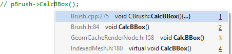

Goto
Go to definitions and declarations to, and from, more places using Visual Assist. Use the default shortcut Alt+G to jump into files inside and outside your projects, and into frameworks that support code behind. Use Alt+G in code and comments. If Visual Assist finds more than one target, it opens a menu that may include guesses.

Use Alt+Left Arrow after Alt+G to return to the original location.
Learn more.